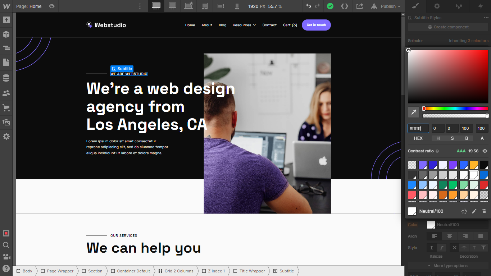
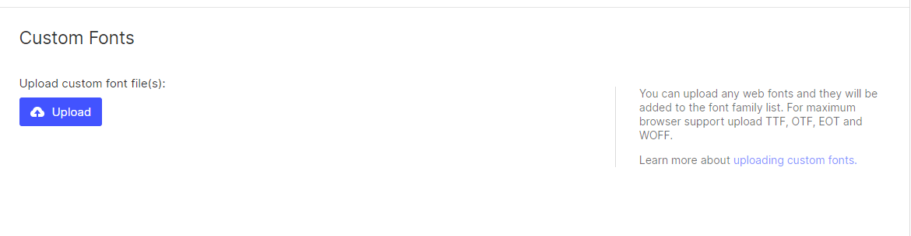
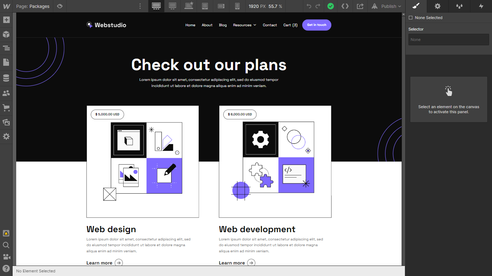
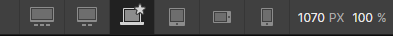
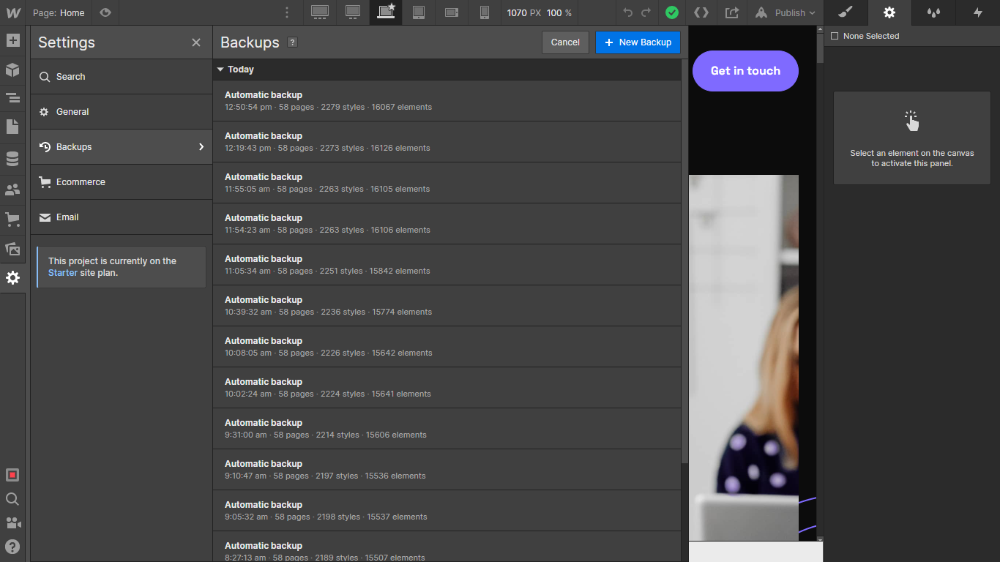

Start here
If you just purchased Webstudio X Webflow Ecommerce Template and are looking for the basics on how to get started editing it, start here.

Getting started
Thanks for purchasing the Webstudio X template. In this brief guide we cover all the basics on how to edit basic elements (i.e. colors, fonts, CMS content, etc) from the Webstudio X Webflow template.
If you are not very familiar with Webflow, we highly recommend you to take the Webflow 101 Crash Course from Webflow University, as it will teach you all the basics to get up and running.
Styling
Let's get started with the styling of the template.
Colors
Webstudio X template is built using Color Swatches, meaning that you can easily edit a color swatch to be updated site-wide.
In order to do this, you just need to go to the Style tab in the right sidebar, then scroll to Colors in Typography section, and if you click the color, you will be able to see all color swatches and edit them to be updated site-wide to any color needed.

Fonts
Webstudio X template uses one single font side-wide, and it's set up in the Body (All Pages) selector, so this means you can easily update the font on all the site in one click.
On any page, just click the orange selector option in the top right of the Style tab, and then select Body (All Pages). Once with this, you can go to Typography section below and change the font to any font for your business brand.

In case you need a custom or premium font that is not available on Webflow, you can always go to Project Settings > Fonts and you will be able to upload custom fonts, or connect your Adobe Fonts account.

Editing Pages
Now it's time to continue with the next steps to edit your website pages. Usually there are 2 types of content that will be edited, which are the following.
Static pages
Static Content is all the content that is not CMS-based, which means that it is not dynamic (like a Blog Post, for example).

You can easily identify all this content because it's shown as grey in the left sidebar Navigator, and it shows a blue border when you click or hover over it.
If you want to edit this type of content, you can just double click it, and you will be able to directly type right there.
Dynamic Content (CMS)
Dynamic Content is all the content that is dynamic and will be auto-generated based on the content added in the CMS section in the left sidebar (just below Pages icon).
You can easily identify all of this because it's shown as purple in the left sidebar Navigator, and it shows a purple border when you click or hover it.

This content should be updated directly in the CMS section. This is meant to make it very easy for you to update it, as it's very likely it will need to be constantly updated (For example, adding a new blog post)

Also, if you want to edit a complete auto-generated CMS page (for example, a Blog Post), you will find this page available for editing in the bottom of all pages in the Pages section in the left sidebar.

Products (eCommerce)
Products or eCommerce content function in a similar way to the CMS dynamic content, however, this is focused exclusively for eCommerce products.
You can identify eCommerce content in a similar way to the CMS content, because it's also shown as purple in the left sidebar Navigator, as well as with a purple border when you click or hover it.

This content should be updated directly in the eCommerce tab in the left sidebar. This is meant to make it very easy for you to update it, as it's very likely it will need to be constantly updated (For example, changing a product price, or adding more stock)

Also, if you want to edit the autogenerated product eCommerce page, you will find this page available for editing almost at the bottom of all pages just above CMS collection pages.

Useful Notes
Also than the main basic explanation we shared above, here we share a few tips and how-to's which are from the most common questions we receive.
Interactions
If you would like to edit any template Interaction (i.e. removing a appear effect), you can easily identify elements that have interactions as these have a small Interactions icon (a small thunder) in the left sidebar Navigator.
If you click this little Interactions icon, you will open the right sidebar Interactions tab for this element, where you can edit the interaction.=

Mobile or Tablet View
Everytime you make a change (for example, you create a new section design), it's a good practice to go to your Viewport top navigation and see how it looks on Tablet and Mobile.

If you only edit a Template section with updated text or images and you don't erase any Template class, this should not be needed, however, if you customize the template more deeply, edit classes, or create new sections, it's always good to constantly edit your mobile and tablet views to ensure everything is looking perfect.
Editing Meta Title, Desc and Featured Image
If you would like to customize the Title, Description and Image that is shown when you share your website on any place (i.e. Facebook, Twitter, etc), you can easily go to the Pages section in the left Sidebar, click the little Settings icon of the page you would like to customize, and all these settings will appear.

Please note it's important to change this on page basis.
Backups
If something goes wrong, for example, if you are not liking where the website is going to, if you deleted some critical classes that were required to make the Template look nice, or if you just want to go to a previous version for any reason, you can always go to the Backups section.

You can find it in the Settings section in the left Sidebar, and then you can just see all the automatic or manual backups. Restoring to the old backup is just a click away.
Webstudio X Webflow Template Support
As you could see above, Webstudio X was built on Webflow using the best practices to make it very easy for you to edit the template and customize it to your needs.
However, if you ever find any issue, need help, or just want to say hi, feel free to send us at email at webstudiox@brixtemplates.com — We will be happy to help you.
Custom Design & Development
On the other hand, if you are looking for help to build an unique and personalized version of Webstudio X, or just an amazing website designed & developed from scratch on Webflow, feel free to get in touch with our Webflow Design & Development Agency. The amazing team behind Webstudio X Webflow Template can help you.
Frequently Asked Questions
How can I get more icons for the template?
Looking for a broader icon family to use in this Webflow Template? Take a look at our BRIX Templates Icon Fonts and get a collection of 100+ icons for your template.
Are you going to release a template for X?
Have an idea for another Webflow Template you would like to see come to life? Send us your Webflow Template Idea and win a special price if we select it.